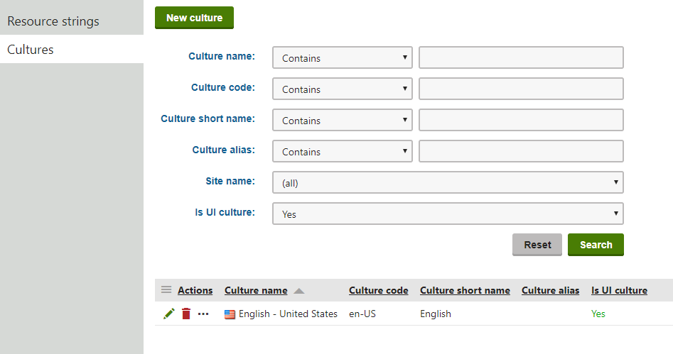

Setting up a multilingual user interface
The user interface culture determines the language of the Kentico administration interface, as well as other factors like numeric and date formats.
Multilingual website content
If you want to learn more about localization of website content (i.e. pages in the content tree), please refer to the Setting up multilingual websites chapter.
Managing site cultures
Users with the Global administrator privilege level can manage all cultures in the Localization application on the Cultures tab. To display only UI cultures, choose Yes in the Is UI culture filter and click Search.

Viewing the available UI cultures
When you create a new culture or edit an existing culture, you can define the following properties:
|
Property |
Description |
|
Culture name |
Name displayed for the culture in the administration interface. |
|
Culture code |
The standard identifier of the culture in format: <language code>-<country/region code> You cannot use neutral culture codes that represent languages in general. Enter the culture code of a specific country/region. For example en-US, not en. |
|
Culture short name |
A shortcut for the culture. |
|
Culture alias |
If set, the culture alias is displayed instead of the culture code in the language selector and in URL language prefixes. |
|
Is UI culture |
Indicates if the culture is available as a language option for the administration interface. |
Preparing UI cultures
Kentico allows you to manage content in any language, including double-byte (eastern) languages, such as Chinese. All content is stored and published in UNICODE.
To prepare the system to display the administration interface in a different language or at least with different culture settings (e.g. calendar and numeric format):
Open the Localization application.
Select the Cultures tab.
Edit (
 ) the culture you want to use for the administration interface.
) the culture you want to use for the administration interface.Select the Is UI culture check box.
Click Save.
Users can now select the new culture as their default UI culture in the My profile application using the Preferred user interface culture drop-down list. However, if the system does not have a corresponding language pack installed, the administration interface strings will still be displayed in the default language.
Installing downloaded localization packs
The default Kentico installation only provides an English pack (en-us culture) for the user interface texts. You can find the pack as resx files in the ~\CMS\CMSResources folder. However, you can download localization packs with already translated resource files for certain languages from DevNet.
After downloading a package:
Open the package and copy the resx file into the ~\CMS\CMSResources folder.
Restart the application to apply the changes to the user interface:
Open the System application.
Click Restart application.
Translating localization strings manually
To translate the localization strings for the added UI culture into a different language manually:
Create a copy of the ~\CMS\CMSResources\cms.resx file in the same folder and name it cms.<culture code>.resx (for example, cms. he-IL .resx).
This file now stores strings with the text of the administration interface copied from the original culture.
Open the copied file and translate the localization strings.
After modifying the .resx file, restart the application to apply the changes to the user interface:
Open the System application.
Click Restart application.
Setting the default UI culture
The default UI culture is en-us. If you configure the system to allow more UI cultures to be used, you can change the default UI culture for users by adding the following key to the <appSettings> section of your site's web.config file:
<add key="CMSDefaultUICulture" value="en-nz" />The value of this key must be a valid culture code (in the example above, en-nz represents the English - New Zealand culture).
If you wish to change the default UI culture, you also need to rename the ~\CMSResources\CMS.resx file to CMS.en-us.resx and the new culture's resource string file (CMS.en-nz.resx in the example) to CMS.resx. This is needed because the CMS.resx file is used when the (default) option is selected as a user's Preferred user interface culture.
When the above mentioned key is used and the CMS.resx file contains the en-nz dictionary, the UI culture will be en-nz for users who have their Preferred user interface culture set to (default).
Applying a culture to a specific user's UI
You can set the administration interface to a specific culture for each user in the system:
Open the Users application.
Edit (
) the user.Select the required Preferred user interface culture on the General tab.
Click Save.
Users may also select their own user interface culture in the My profile application on the Details tab, by setting the Preferred user interface culture.
When the user signs out and then back in, the system displays the interface according to the new culture settings and with translated strings (once the translation is complete).
Users can also change the culture of their interface by opening the User menu and clicking on Change language. This selection also changes the Preferred user interface culture setting of the given user.